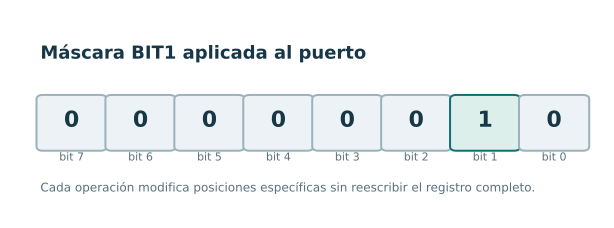
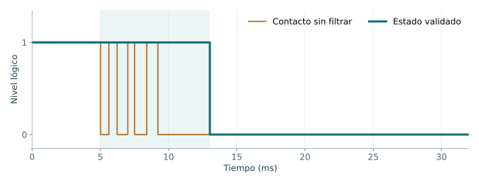

Entradas y salidas digitales del MSP430G2553
Registros de puerto, resistencias internas, lectura por sondeo y el origen físico del rebote
120 + 120 + 60 minMSP430G2553Resultados de aprendizaje
- Configurar P1 y P2 con máscaras que preserven el resto del registro.
- Interpretar los niveles eléctricos de un pulsador activo en bajo.
- Comparar lecturas ideales y lecturas con rebote mediante registros temporales.
- Preparar el montaje de la práctica 2 de antirrebote.
Interpretación de niveles lógicos en entradas digitales
Una entrada digital informa si la tensión presente en un pin pertenece a una región lógica baja o alta. No entrega directamente el valor de una magnitud continua; su interpretación depende de los umbrales de entrada indicados en la hoja de datos. No debe suponerse que cualquier tensión intermedia tiene un estado definido ni que todos los pines comparten un umbral fijo de la mitad de la alimentación.
Para leer un pulsador normalmente abierto se utiliza con frecuencia una resistencia de pull-up hacia la alimentación y un contacto hacia tierra. El pin se mantiene en estado alto cuando el botón está abierto y pasa a bajo al presionarlo. Por tanto, la condición lógica de botón presionado corresponde a cero: es una entrada activa en bajo. El valor lógico es una convención del circuito, no una propiedad del pulsador.
Un pin flotante no es una entrada válida: el acoplamiento capacitivo y las fugas pueden cambiar su lectura. En el MSP430G2553, los puertos permiten habilitar resistencias internas de polarización con P1REN y seleccionar pull-up o pull-down mediante P1OUT cuando el pin está como entrada.
Los registros GPIO como operaciones sobre bits

Los registros de puerto ofrecen un ejemplo directo de la relación entre hardware y lenguaje C. P1DIR selecciona dirección (1 = salida; 0 = entrada); P1IN refleja el estado de los pines; P1OUT determina el nivel lógico de una salida o el sentido de la resistencia interna habilitada; P1REN conecta esa resistencia. Para activar únicamente el bit 1 se utiliza una máscara, por ejemplo P1REN |= BIT1;. Esta operación modifica el bit seleccionado sin sobrescribir las configuraciones de los demás pines.
Una configuración inicial del pulsador en P1.1 puede escribirse como P1DIR &= ~BIT1;, P1REN |= BIT1; y P1OUT |= BIT1;. Después se consulta (P1IN & BIT1) == 0 para detectar la pulsación. La secuencia debe comprobarse contra la multiplexación del pin, ya que una función periférica puede reemplazar la operación GPIO si fue seleccionada previamente.
En sentido de salida, un LED requiere una resistencia limitadora y un retorno eléctrico correcto. El microcontrolador no debe alimentar directamente motores, bobinas o cargas que excedan la capacidad de la salida.
Símbolos, significado y unidades
- R
- registro original, adimensional
- M
- máscara binaria, adimensional
Por qué una pulsación produce múltiples transiciones
Al cerrar o abrir contactos metálicos, las superficies no alcanzan instantáneamente una unión estable. Durante varios milisegundos pueden producirse múltiples contactos breves. Una lectura por sondeo interpreta cada rebote como un cambio válido si el programa no lo discrimina. La duración depende del pulsador, envejecimiento, entorno y presión; por eso se mide en lugar de adoptar un valor universal.
El antirrebote puede resolverse por retardo y comprobación de estado, por filtrado eléctrico o por una máquina de estados no bloqueante. Su costo es una combinación de latencia, robustez, consumo de CPU y componentes adicionales. Una frecuencia de lectura alta no elimina el rebote; sencillamente permite observarlo con mayor detalle. 
El modelo eléctrico de un capacitor y una resistencia explica la atenuación de cambios rápidos, pero un RC no genera necesariamente una transición lógica limpia en todos los umbrales. Los tiempos de subida y bajada, los umbrales de entrada y la histéresis disponible deben revisarse antes de adoptar un esquema definitivo.
Procedimiento experimental y análisis
La práctica 2 propone comparar antirrebote software y hardware con un pulsador en P1.1 y un LED en P2.0. Primero verifique alimentación y polarización con el instrumento antes de conectar el osciloscopio. Registre al menos veinte pulsaciones de manera comparable. Distinga pulsaciones físicas, eventos detectados y transiciones parásitas; no son la misma variable.
Presente un registro temporal que muestre el estado crudo y el evento validado. Repita con dos ventanas de antirrebote y describa cuándo el filtrado elimina eventos genuinos. Como extensión, registre el tiempo entre el primer flanco y la confirmación estable para cuantificar la latencia. Termine con una tabla de ventajas y limitaciones de cada método.
Ejemplo de configuración de entrada y salida
Planteamiento. Un pulsador normalmente abierto conectado a P1.1 cierra a tierra y un LED externo se gobierna desde P2.0 a través de una resistencia. Para habilitar el pull-up interno, primero configure P1.1 como entrada, habilite P1REN y establezca el bit correspondiente de P1OUT. La lectura será alta cuando el pulsador esté abierto y baja cuando cierre.
Interpretación. Si el programa utiliza if (P1IN & BIT1) como condición de pulsación, leerá el evento al revés. La comprobación coherente es (P1IN & BIT1) == 0. Antes de conectar el LED al pin de salida, dimensione su resistencia conforme a tensión, corriente permitida y caída nominal del componente. Verifique también la conexión del retorno a GND.
Configuración de entrada digital y salida GPIO en C
El código siguiente muestra una operación concreta del MSP430G2553. Identifique sus entradas, registros y condiciones iniciales antes de incorporarlo a la práctica.
// Pulsador activo en bajo en P1.1; LED en P2.0
P1DIR &= ~BIT1;
P1REN |= BIT1;
P1OUT |= BIT1;
P2DIR |= BIT0;
if ((P1IN & BIT1) == 0) {
P2OUT |= BIT0; // ejemplo de salida activa en alto
}Lecciones y actividades
Las tres sesiones mantienen la secuencia teórica y experimental del curso.
- Clase 1 · 120 min: entradas/salidas y registros de configuración; interpretación de las señales.
- Clase 2 · 120 min: montaje y prueba inicial de la práctica 2; lectura por polling.
- Clase 3 · 60 min: comparación de pulsaciones y preparación del registro de datos.
Entregas
- Cuestionario L3: clase 1 de la semana 6.
- Actividades de GPIO y práctica 2: clase 2 de la semana 6, conforme al programa original.
Trabajo para la semana siguiente
Probar también una solución RC y preparar la investigación sobre interrupciones.
Materiales y recursos
- Cuestionario L3.pdfActividades · PDF
- Practica 2_ Antirrebote en entradas digitales.pdfActividades/Practica 2 · PDF
- Entrada_Salida_Digital_MSP430G2553.pdfPresentaciones · PDF